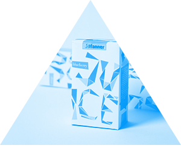
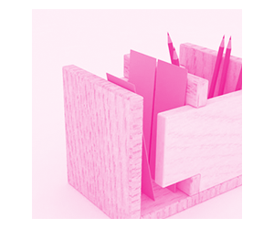
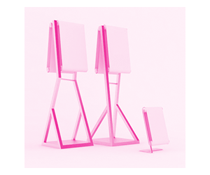
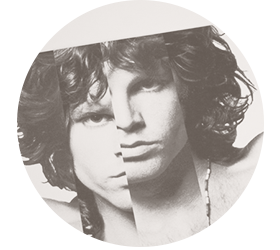
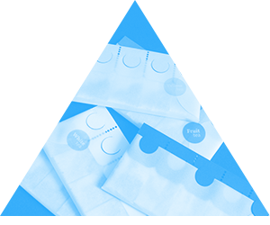
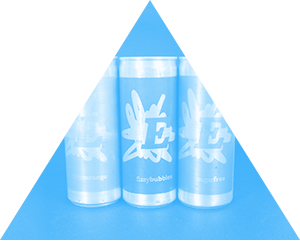
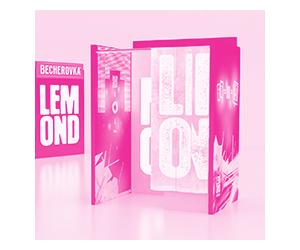
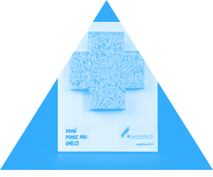
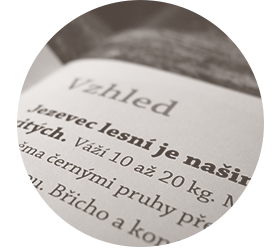

Tereza Čižmárová
O mně
Produktový
,
obalový
a
grafický
design
Filtrování zapnuto
Juice
Džusové obaly

Záložka a
tužka
Stojánek na tužky

LFŠ
Vizuální styl
Jansen
Display
Informační stojan

The Doors
Návrh obalu na vinyl

Čajové
obaly
Pro pět příchutí

The E
Obal energy nápoje

Becherovka
Lemond
POP objekt

První
pomoc
Propagační předměty

Zelené
království
Návrh magazínu
